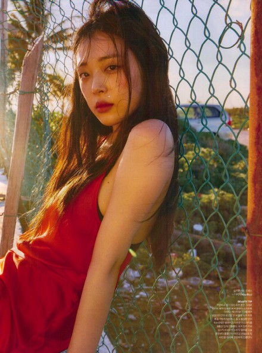
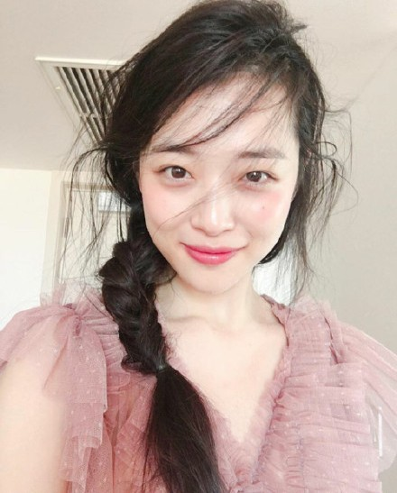
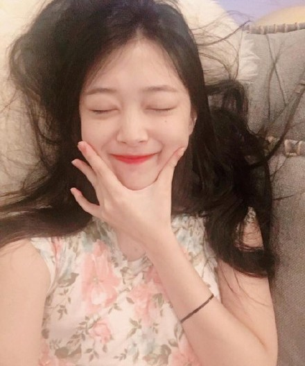

崔雪莉，（Sulli），别称：崔珍丽；1994年3月29日出生于韩国釜山，韩国女歌手、演员、主持人，毕业于首尔清潭学院。
2005年加入韩国SM公司成为旗下练习生学习四年演艺，2009年9月5号以f(x)组合出道，担任f(x)组合主唱以及形象担当。
2011年主演电视剧《Welcome to The Show》。
2012年主演电视剧《致美丽的你》，2012年12月31日获得SBS演技大赏“NEW STAR”奖。
2014年出演电影《时尚王》，2014年与孙艺珍 、金南佶主演电影《海盗-奔向大海的山贼》。
2015年8月正式退出韩国女子组合f(x)。
2005年 ，在父母支持下参加SM韩国少年选拔大会得到了青少年组外貌组大赏，进入公司培训，并被选为SM公司优秀练习生代表，参加SM十周年庆典。10月5日，崔雪莉出演电视剧《爱情需要奇迹》在韩国首播。
2007年10月25日，崔雪莉与陶智媛、朴相郁、孙贤周主演电影《出拳女郎》。
2008年2月28日，崔雪莉与车太贤、河智范主演电影《笨蛋》日本首映。
2009年，正式加入韩国POP DANCE组合f(x)，以歌手形式正式出道。
2010年5月4日，f(x)组合MINI一辑主打歌《NU ABO》 音源在线公开。
2011年3月，与尼坤主演电视剧《Welcome to The Show》在韩国首播。4月22日，f(x)第一张正规专辑《Pinocchio》正式回归舞台，此后连续拿下各大音乐节目的8个一位，后续曲《hot summer》两个第一 。9月25日，北京国家体育馆中日韩三国演唱会，f(x)组合登台表演。
2012年8月15日，崔雪莉与崔珉豪、李玹雨主演的电视剧《致美丽的你》在韩国首播。同年，f(x)组合推出第二张MINI专辑，主打歌《Electric Shock》推出后遍占据韩国melon、soribada、bugs、olleh music等音源榜单实时榜1位，同时连续拿下各大音乐节目9个一位，歌曲MV在YouTube网站韩国女团中点击率获得一位。
2013年 , 7月29日，f(x)发表第2张正规专辑《Pink Tape》回归舞台，这是既2012年6月“Electric Shock”之后时隔13个月的专辑。在发布音源几天后，主打歌《Rum Pum Pum Pum》就在韩国各大音乐排行榜名列第一名，也登上了亚洲各国iTunes排行榜首位。同年出演电影《海盗》。
2014年，与朱元主演电影《时尚王》，同年与孙艺珍、金南佶主演电影《海盗-奔向大海的山贼》。
2015年8月7日，f(x)所属经纪公司SM娱乐表示“雪莉正式退出f(x)，全力集中于演技活动。公司也决定尊重她的个人意愿。”
2016年3月23日，被爆料将在与金秀贤一起出演的电影《Real》中挑战大尺度床戏，《Real》的制作公司不久后就确认了该消息。12月19日，出席在首尔永登浦CGV举行的电影《Master》VIP试映会。
2017年6月28日，时隔三年回归大荧幕，参演金秀贤主演的犯罪动作电影《Real》，在片中饰演康复师宋宥华，电影夺得了韩国电影实时预售榜冠军。
